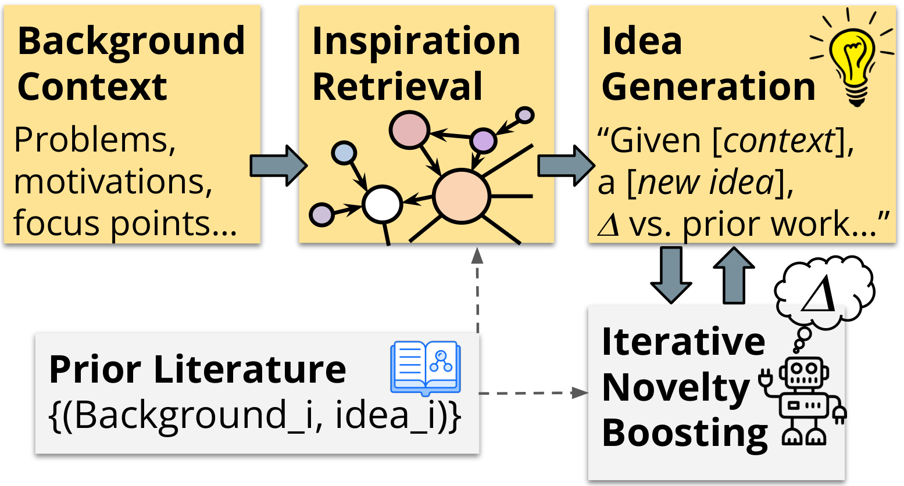
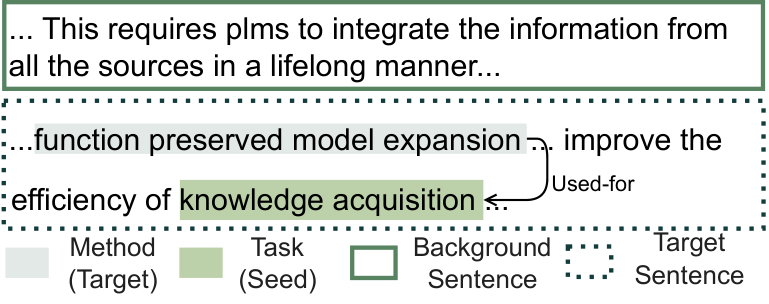

流水线四步
- 句子分类（Cohan et al. 2019）：摘要句 → Background / 其余为目标句 T
- PL-Marker（SciERC 预训练）：从 T 抽 Task/Method/Metric/Material 实体 + used-for 关系
- SciCo 共指合并同义节点；ScispaCy 展开缩写
- 只保留高置信输出；人工抽检各步精度 91–100%，唯关系抽取仅 65%，总通过率 79.7%
Scientific Inspiration Machines Optimized for Novelty —— 把文献假设生成从"概念链接预测"推向"自然语言 idea 生成"，并首次把新颖性作为显式优化目标
一句话：输入一段"背景问题描述 + 一个种子术语"，SciMON 从旧文献里检索三类"灵感"（语义近邻 / KG 近邻 / 引文近邻）拼进 prompt 让 LLM 生成一句 idea；再用"检索相似旧 idea → 超过相似度阈值就要求 LLM 改写得更不一样"的循环显式提升新颖性。结论诚实：方法有效提升了新颖性（约 55% 的迭代产生更新颖的 idea），但 85% 的人评仍认为真实论文的 idea 显著更有深度。
四十年的 Literature-Based Discovery（Swanson 的 ABC 模型）只预测"概念 A—概念 C 是否有链接"。SciMON 把输出换成一整句自然语言 idea，把输入换成带上下文的问题描述。

论文声称 输入是背景 B =（问题/动机/实验设定 M）+ 种子术语 v（模拟用户给助手的提示词，实际从 ground truth 关系中取）；输出是一句 idea I，要求相对 B 和整个文献库都新颖。任务分 forward（[v used-for ?]，给方法找任务）和 backward（[? used-for u]，给任务找方法）两个方向。
注意任务的"温和"边界：种子术语取自 ground truth，是给定答案关键词的"半开卷"设定（论文 Limitations 自己承认这是模拟用户引导，无种子设定更难、留作未来）。评测目标也只是一句话级别的 idea，不是完整 proposal。
没有人工标注的训练集——用现成科学 IE 系统从 6.7 万篇 ACL 论文摘要里自动抽出 11 万条 (背景, idea) 训练对。

论文声称 时间切分同时用作防数据污染手段：T5/GPT-3.5/GPT-4（0314）的预训练截止都在 2022 年测试论文之前，另做过 GPT-4 记忆抽查未见复述。生物医学扩展实验同理（Meditron-7b 截止 2023-08，测试集全部取 2023-08 之后的 PubMed 论文）。
核心假设来自创新认知科学：研究者提出新 idea 时踩在一张旧概念/旧论文之网上。SciMON 把这张网具体化成三种可检索的"灵感"。

把（模板化种子 + 背景）拼成查询 b，用 SentenceBERT 在训练集里找 top-k 相似的旧背景，取其对应旧 idea 里的目标实体（不是整句）作灵感。平均每条 10.8 个，上限 20。
用同一 IE 流程在全语料上建全局背景 KG（19.7 万节点 / 26.1 万 used-for 边），取种子术语的一跳邻居作灵感，数量不设限（平均 8.3 个）。
假设已知背景出处论文 d，从 d 引用的 2021 年前论文里取与 d 最相似的 top-5 标题作灵感。论文自认这是"更强的信息假设"。
论文声称 检索底库规模：5.9 万篇论文、37.4 万句、8.7 万条引文标题。三路灵感以 The retrieval results are: i1,…,ik 的形式直接拼进 prompt / T5 输入。
Consider the following context: M. In that context, which [type] can be used for [seed], and why?google-t5/t5-large，lr 6e-6、4×A6000、10 epochs、beam 5–20、负例 2 个（finetune_lm.sh --neg_num 2，与附录一致）。CL 实现为 ContrastiveHead（线性层 + sigmoid + 按目标长度平均池化）后对 [正, 负…] logits 做 CrossEntropy（等价 InfoNCE，τ 固定为 1，代码里没有温度超参）。这是标题里 "Optimized for Novelty" 的落点，也是被后续工作引用最多的机制。本质是一个以检索相似度为"新颖性惩罚"的拒绝—重写循环。
1. 检索：把当前生成的 idea I_t 作为查询，用 SentenceBERT 在训练集全部旧 idea（参考库 R）里取 top-20 相似句。
2. 比对：每条相似句的余弦分 S_i 与阈值 μ=0.6 比较；全部低于阈值 → 判定"足够新颖"，停止。
3. 重写：把超阈值的旧 idea 原文塞回对话，指令 LLM："你的想法与这 j 句已有研究相似……请确保你建议的想法与上述研究显著不同。Let's give it another try."，回到第 1 步。
代码确认 重写 prompt 与论文逐字一致（models/Iterative/gpt4_iter1.py 的 query2_template）；对话按 system → 原 prompt → 首次回答 → 重写指令 的多轮消息构造，gpt-4-0314、temperature=1、max_tokens=100（生成与重写都是，idea 长度被硬性掐短）。
审计发现：循环 ≠ 循环。论文说"迭代直到所有 S_i 低于 μ"，但代码里没有循环——只有两个手工跑的脚本 gpt4_iter1.py / gpt4_iter2.py（二者 diff 仅目录名），即实际上限 2 轮。这与实验只人评两轮一致，但"直到收敛"的表述在实现层面不存在。
自动指标（ROUGE-L / BERTScore-SciBERT / BARTScore）只作参考——论文自己指出 T5 靠套模板 + 短输出在自动指标上占便宜（金标集 R-L：T5+SN+CL 0.258 vs GPT4FS 0.151），而人评完全反过来。真正的证据是四个人评实验。
| 人评 | 设置 | 关键数字 |
|---|---|---|
| Study I 变体对比 | 6 名 NLP 研究生，金标集抽 50 条，8 个系统盲评"是否有帮助"（相关 + 新颖 + 清晰 + 合理） | GPT4FS 73% ≫ GPT4FS+KG 66% ≫ T5+SN+CL 48% > GPT3.5FS 33% > T5 22%。GPT-3.5 全面差于微调 T5 |
| Study II 对比真论文 | GPT4FS vs GPT4FS+KG 排序 + 对照 ground truth | +KG 在 48% 对里技术细节更多、45% 更不 incremental（其余基本平手）；但 85% 的对比中真论文 idea 被判"显著更高的技术水平与新颖性" |
| Study III 新颖性迭代 | 5 名标注者，70 条，比较迭代前后 | SN 变体：第 1 轮 88.9% 的改写"实质不同"、55.6% 更新颖；第 2 轮再有 57.8% 更新颖；未观察到新颖性下降（只升或持平） |
| 生物医学泛化 | 换 PubTator 3 做 IE，微调 Meditron-7b，2 名领域专家评 | Meditron+SN 80% helpful（基线 35%）；45% 场合被认为好于 ground truth —— 与 NLP 域相反 |
摘要原话："GPT-4 tends to generate ideas with overall low technical depth and novelty, while our methods partially mitigate this issue"。错误分析指出模型爱输出通用配方（"data augmentation and transfer learning"）、直接改写背景（"high latency"→"low latency"）、以及把流行概念堆在一起的"新词"（如 Dynamic Syntax-Aware Graph Fusion Networks）。2023 年就把这些 LLM 生成 idea 的病症说透了，后续 idea 生成论文基本都在重复验证这些观察。
合理推断 KG 灵感在 Study I 里反而略拖后腿（66% vs 73%）但在 Study II 里赢技术深度——说明"灵感注入"提升的是内容具体性而非人评第一印象，这也是后续工作（如 SciPIP）把检索信号做得更复杂的动机之一。
仓库 EagleW/Scientific-Inspiration-Machines-Optimized-for-Novelty（论文脚注 eaglew/clbd 301 重定向至此，已核实）。89 个 Python 文件共约 13.1k 行；无统一入口，是"每个模型变体一个目录 + 手工按序跑脚本"的研究代码。数据（data/*.zip）与全部模型输出（result/*.zip，含 GPT-4 各变体每条测试样本的原始输出）都在仓库里，复现人评分析不需要重新调 API。
preprocess/t5_sn / t5_kg / t5_ct：为 T5 数据集注入三路灵感；gpt3.5_process 构造 few-shot prompt
models/T5, T5+CL, T5+CL+NBR微调一族；modeling_t5.py 里的 ContrastiveT5ForConditionalGeneration 是 CL 的全部实现
models/GPTZS/FS/Retr, GPTFS+NBRin-context 一族，openai 0.x 旧 SDK，gpt-4-0314 硬编码
models/Iterative/calculate_sim(1).py 检索相似旧 idea → gpt4_iter1/2.py 执行两轮重写
evaluation/BLEU/ROUGE/BERTScore(SciBERT)/BARTScore 脚本
biomedical_models/og/sn/kg/ct 四变体，HF Trainer 风格微调（Meditron 路径由 --model_name_or_path 传入）
1. 检索编码器不一致（影响所有检索结果的解读）。论文正文与附录明确写 SentenceBERT all-mpnet-base-v2（"performs best in semantic search"），但代码中 6 处检索实现（preprocess/t5_sn.py、t5_ct.py、gpt3.5_process.py、models/Iterative/calculate_sim*.py、models/GPTFS/process.py）全部硬编码更小的 all-MiniLM-L6-v2。新颖性阈值 μ=0.6 是在哪个嵌入空间上调的因此存疑。
2. gpt4_iter1.py/iter2.py 有未定义变量 bug。当某条 idea 检索不到超阈值相似句（number == 0 分支）时执行 writer.write(...)，但 writer 直到循环结束才定义 → 必然 NameError；即使修掉，该分支也没有把未重写样本加入 new_pp，输出文件会静默丢失所有"已足够新颖"的样本。发布版脚本照原样跑不出论文结果，作者实跑的应是另一版本。
3. 限速逻辑同样带病。from time import time 之后调用 time.sleep(60)（函数没有 sleep 属性），触发限速分支即崩溃；该 bug 在 GPTFS/GPTZS/Iterative 各脚本中复制粘贴存在。
较轻的偏差：(a) 论文说"迭代直到全部低于阈值"，代码上限 2 轮（见上文）；(b) GPT4FS 把整个 few-shot prompt 放进 system 角色单条消息，与论文描述的 few-shot 语义等价但非常规；(c) CL 公式里的温度 τ 在代码中不存在（恒为 1）、sigmoid 在 ContrastiveHead 内而非公式位置，属实现级简化；(d) param.py 默认 neg_num=10/lr=1e-5 与论文不符，但随附 shell 脚本以 --neg_num 2 --lr 6e-6 覆盖，与论文一致——看默认值会被误导。
代码确认 与论文一致的关键项：新颖性阈值 0.6 与 top-20 检索（calculate_sim.py）、重写 prompt 逐字一致、T5-large + 4 GPU + 10 epochs、SN/CT 的检索数上限（20/5）、时间切分数据目录结构。最后提交 2024-04-13（HEAD 2dc17a1），README 引用本论文，无后续维护。
合理推断 SciMON 的持久贡献是三件事：任务定义（背景→自然语言 idea）、自动构造训练对的 IE 流水线、以及"检索—比对—重写"的新颖性优化范式。它的实验结论（LLM idea 浅、爱重组热词、离真论文远）则成为整条线的共识起点。
建议：复杂。理由：(1) ACL 2024 主会 + idea 生成线公认的参照原点，档案里 SciPIP、ResearchAgent 都以它为对照，值得保留完整可查的方法与数字细节；(2) 有真实可审计的系统性工程——11 万对 IE 自动构造数据、三路检索、对比学习微调、两轮新颖性迭代、四个人评实验，且数据与全部模型输出公开，诚意远超"包装的好看"档；(3) 但代码是无入口的研究脚本堆，发布版关键脚本带致命 bug、检索编码器与论文不符，不属于"能跑起来的复杂系统"，如果"复杂"档要求工程可复现性，也可以降为"简单"档并以本页审计记录为准。倾向前者，请定夺。